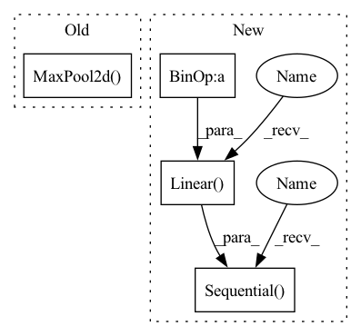

Pattern ID :14899

Before Change
class CRNN(nn.Module):
def __init__(self, number_class_symbols, in_channels=3, rnn_size=128):
super().__init__()
self.maxpooling_22 = nn.MaxPool2d(2, 2)
self.maxpooling_21 = nn.MaxPool2d((2, 2), (2, 1), (0, 1))
self.layer1 = self._make_layer(in_channels, 64, 3, 1, 1)
self.layer2 = self._make_layer(64, 128, 3, 1, 1)
self.layer3 = self._make_layer(128, 256, 3, 1, 1)
After Change
self.avg_pool = nn.AdaptiveAvgPool2d(
(time_feature_count, time_feature_count))
self.bilstm = BiLSTM(time_feature_count, lstm_hidden, lstm_len)
self.classifier = nn.Sequential(
nn.Linear(lstm_hidden * 2, time_feature_count),
nn.GELU(),
nn.Dropout(0.1),
nn.Linear(time_feature_count, number_class_symbols)
)
def forward(self, x):
x = self.feature_extractor(x)
b, c, h, w = x.size()
In pattern: SUPERPATTERN
Frequency: 3
Non-data size: 4
Instances
Fragment ID: 49609204
Project Name: ai-forever/ocr-model
Commit Name: db55ee227e236d8da2dc2323804c42dd7f6b14b4
Time: 2021-09-28
Author: kalinin@sent.com
File Name: ocr/src/models.py
M Class Name: CRNN
N Class Name: CRNN
M Method Name: __init__(5)
N Method Name: __init__(4)
M Parent Class: nn.Module
N Parent Class: nn.Module
M File Name: ocr/src/models.py
N File Name: ocr/src/models.py
M Start Line: 23
M End Line: 32
N Start Line: 28
N End Line: 40
'>
Before Change
class CRNN(nn.Module):
def __init__(self, number_class_symbols, in_channels=3, rnn_size=128):
super().__init__()
self.maxpooling_22 = nn.MaxPool2d(2, 2)
self.maxpooling_21 = nn.MaxPool2d((2, 2), (2, 1), (0, 1))
self.layer1 = self._make_layer(in_channels, 64, 3, 1, 1)
self.layer2 = self._make_layer(64, 128, 3, 1, 1)
self.layer3 = self._make_layer(128, 256, 3, 1, 1)
After Change
self.avg_pool = nn.AdaptiveAvgPool2d(
(time_feature_count, time_feature_count))
self.bilstm = BiLSTM(time_feature_count, lstm_hidden, lstm_len)
self.classifier = nn.Sequential(
nn.Linear(lstm_hidden * 2, time_feature_count),
nn.GELU(),
nn.Dropout(0.1),
nn.Linear(time_feature_count, number_class_symbols)
)
def forward(self, x):
x = self.feature_extractor(x)
b, c, h, w = x.size()
'>
Fragment ID: 49609201
Project Name: sberbank-ai/ocr-model
Commit Name: db55ee227e236d8da2dc2323804c42dd7f6b14b4
Time: 2021-09-28
Author: kalinin@sent.com
File Name: ocr/src/models.py
M Class Name: CRNN
N Class Name: CRNN
M Method Name: __init__(5)
N Method Name: __init__(4)
M Parent Class: nn.Module
N Parent Class: nn.Module
M File Name: ocr/src/models.py
N File Name: ocr/src/models.py
M Start Line: 23
M End Line: 32
N Start Line: 28
N End Line: 40
'>
Before Change
// stride=1
), // output shape (out_channels, current_size, current_size)
nn.ReLU(), // activation
nn.MaxPool2d(kernel_size=2), // choose max value in 2x2 area, output shape (16, 14, 14)
))
current_size = current_size / 2
current_channels = channels[l_id]
After Change
nn.Linear(int(current_size * current_size * current_channels), latent_dims),
)
else:
self.fc = nn.Sequential(
nn.Linear(int(current_size * current_size * current_channels), latent_dims),
)
self.conv_layers = nn.Sequential(*conv_layers)
def forward(self, x):
x = self.conv_layers(x)
'>
Fragment ID: 49609197
Project Name: jameschapman19/cca_zoo
Commit Name: a67b4d1253acfaa0d8f3b544104e7f329d975239
Time: 2021-02-17
Author: james.chapman.19@ucl.ac.uk
File Name: cca_zoo/deep_models.py
M Class Name: CNNEncoder
N Class Name: CNNEncoder
M Method Name: __init__(8)
N Method Name: __init__(8)
M Parent Class: BaseEncoder
N Parent Class: BaseEncoder
M File Name: cca_zoo/deep_models.py
N File Name: cca_zoo/deep_models.py
M Start Line: 116
M End Line: 154
N Start Line: 114
N End Line: 158